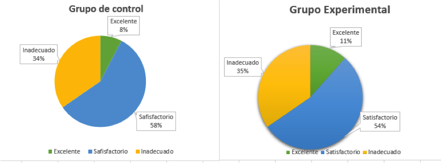

Propuesta de una estrategia de enseÑanza con el uso del software
Flowgorithm para el Desarrollo de la habilidad de diseño de algoritmos estructurados
Por: Mirtha Jimenez León
Al culminar la asignatura
No aplican estructuras básicas de diseño de algoritmos
No verifican correctitud de algoritmos
35% de reprobados
Deficiencias en la habilidad de diseño de algoritmos estructurados
Reforzar deficiencias en el desarrollo de la habilidad Diseño de algoritmos
estructurados
Problema/Objetivo principal
¿Cuáles son los efectos de aplicar una estrategia de enseñanza con el uso del software Flowgorithm en el
desarrollo de la habilidad ‘diseño de algoritmos estructurados’ en la asignatura Taller de programación I
de la carrera Ing. en Sistemas en la UPDS?
Determinar los efectos de aplicar una estrategia de enseñanza con el uso de software Flowgorithm en el
desarrollo de la habilidad ‘diseño de algoritmos estructurados’, para una propuesta de estrategia de
enseñanza que apoye en el desarrollo del contenido en la asignatura
Problemas/Objetivos secundarios
¿Cuáles son las herramientas tecnológicas que utilizan en la asignatura orientadas
al desarrollo de la habilidad ‘Diseño de algoritmos estructurados’?
Identificar las herramientas tecnológicas que se utilizan en la asignatura
orientadas al desarrollo de la habilidad ‘Diseño de algoritmos estructurados’
Problemas/Objetivos secundarios
¿Cuál es el estado de la habilidad ‘diseño de algoritmos estructurados’ en los grupos de estudio
(experimental y control) en la asignatura antes y después de aplicar el software
Flowgorithm?
Diagnosticar el estado de la habilidad ‘diseño de algoritmos estructurados’ en los grupos de estudio
(Experimental y de control) de la asignatura antes de aplicar el software Flowgorithm.
Problemas/Objetivos secundarios
¿Cuál será la estructura de la estrategia de enseñanza que emplee el software Flowgorithm que permita
reforzar la habilidad ‘diseño de algoritmos estructurados’ de los estudiantes de la asignatura?
Definir la estructura de la estrategia de enseñanza que emplee el software Flowgorithm que permita reforzar
la habilidad ‘diseño de algoritmos estructurados’ en los estudiantes de la asignatura
Hipotesis del trabajo
Si se aplica una estrategia de enseñanza con el uso del software Flowgorithm se obtienen
efectos positivos en el desarrollo de la habilidad ‘Diseño de algoritmos estructurados’ de los estudiantes de
la asignatura Taller Programación de la Carrera Ing. en Sistemas de la UPDS
Marco metodológico
Método: Hipotético Deductivo
Tipo de investigación: Aplicada, descriptiva, comparativa y propositiva
Recolección de datos: Rubricas, cuestionarios y evaluaciones
Programación estructurada
La regla general es que las instrucciones se ejecuten sucesivamente una tras otra,
pero diversas partes del programa se ejecutan o no dependiendo de que se cumpla
alguna condición. Además hay instrucciones que deben ejecutarse varias veces(bucles)
sea un numero fijo o hasta que cumpla una condición determinada (Hunt, 2000)
Algoritmos estructurados
Una herramienta que permite describir claramente un conjunto finito de instrucciones
ordenadas secuencialmente y libres de ambigüedad,
que debe llevar a cabo un computador para lograr un resultado previsible (Resnick, 2009)
Análisis y resultados etapa I
Identificación de herramientas tecnológicas orientadas al desarrollo de la habilidad diseño de algoritmos
estructurados
Recursos tecnologicos usados en la asignatura
Análisis y resultados etapa II
Diagnóstico Inicial
Identifica y maneja los elementos de entrada en el diseño de algoritmos

Aplica elementos fundamentales en el diseño de algoritmos
Aplica e identifica estructura condicional simple en el diseño de algoritmos
Aplica e identifica estructura repetitiva en el diseño de algoritmos
Resuelve los elementos de salida en el diseño de algoritmos
Análisis y resultados etapa III
Diagnóstico posterior
Identifica y maneja los elementos de entrada en el diseño de algoritmos
Aplica elementos fundamentales en el diseño de algoritmos
Aplica e identifica estructura condicional simple en el diseño de algoritmos
Aplica e identifica estructura repetitiva en el diseño de algoritmos
Resuelve los elementos de salida en el diseño de algoritmos
Propuesta
Objetivos
- Reforzar la habilidad diseño de algoritmos estructurados
- Motivar a los estudiantes con el uso de recursos tecnologicos
- Proporcionar a los docentes una herramienta de apoyo
Propuesta
Plan de acción
- Modelo constructivista
- Estrategias competitiva/cooperativa/de problemas resueltos
- Técnica de programación en pares
Propuesta
Componentes
- Participantes
- Recursos tecnológicos
- Preparación de actividades
Conclusiones
En la asignatura usan como recurso tecnológico las diapositivas y entornos de
programación de forma frecuente
Estudiantes y docentes consideran
útil el uso de recursos tecnológicos para la formación académica y el proceso de enseñanza-aprendizaje
Conclusiones
Diagnóstico inicial: la
habilidad ‘diseño de algoritmo estructurado’ en ambos grupos (experimental y de control) es equivalente
Diagnóstico posterior al uso del software Flowgorithm:
grupo experimental tuvo un mejor desarrollo de la habilidad
mostrando ventajas notorias
Se identificaron los contenidos y las actividades de la asignatura, integrando a ellos la
experiencia y el
uso del software Flowgorithm para elaborar una estrategia de enseñanza
Recomendaciones
Usar el software Flowgorithm como herramienta de apoyo al autoaprendizaje ya que permite a los estudiantes
el seguimiento paso a paso del algoritmo y la verificación de la correctitud de su diseño
Dedicar más tiempo con el uso del software Flowgorithm cuando se estén introduciendo
conceptos de diseño de algoritmos
Aplicar la estrategia de enseñanza propuesta
para reforzar el desarrollo de las habilidades de programación